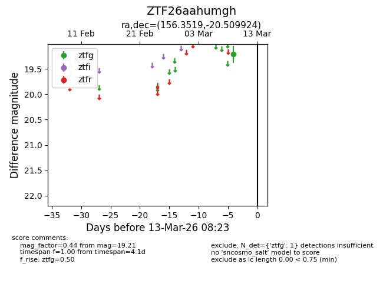
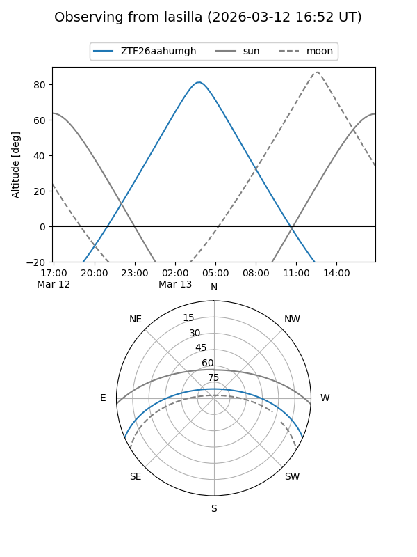
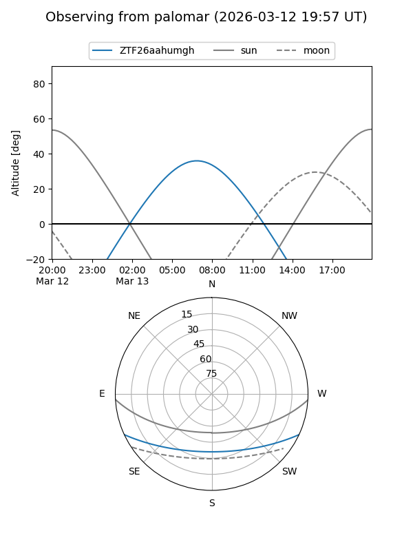

ZTF26aahumgh
Target ZTF26aahumgh at 2026-03-13 08:25
Aliases and brokers:
FINK: link
Lasair: link
ALeRCE: link
alt names
ZTF26aahumgh (ztf,fink_ztf)
Coordinates:
equatorial (ra, dec) = 156.3519,-20.50992
equatorial (HMS+DMS) = 10:25:24.45,-20:30:35.73
galactic (l, b) = (262.5480,+30.68013)
Flags:
Photometry:
last ztfg=19.21
1 ztfg detections
Lightcurve

Visibility


Additional plots